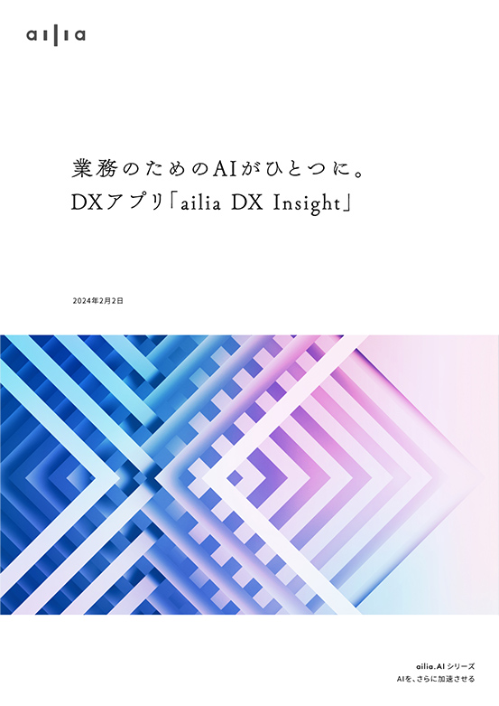

\ 文章検索、翻訳、議事録、画像生成も！ /
WHITE PAPER
AI活用のお役立ちヒント
ビジネスのDXに役立つトピックスも満載。
仕事に役立つAIのヒントを、わかりやすくご紹介します。
2024.02.21

業務のためのAIがひとつに。
DXアプリ「アイリア DX Insight」
営業職や研究職、さらにはお笑いまで？ビジネスのDXを多角的にサポートする、最新の"セキュアなDXアプリ"、「アイリア DX Insight」の真価と、そのご活用例について。
PDF資料
無料ダウンロード2023.10.12

ビジネスにどう効く？AIの専門家に聞いた
「画像生成AI」の現在地と未来
ビジネスの現場において、画像生成AIはどう活用できるのか。AIの専門家が語る画像生成AIの最新事情と、導入に際しておさえておきたいポイントにフォーカスする。
PDF資料
無料ダウンロード